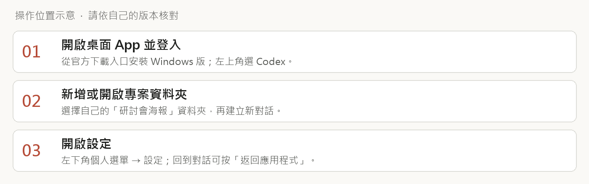
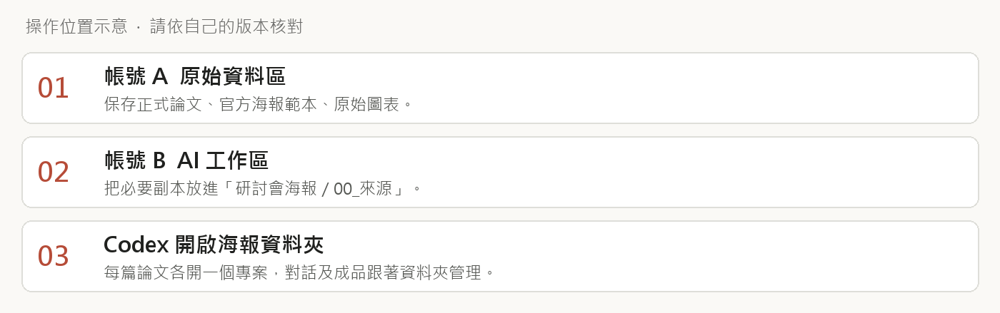
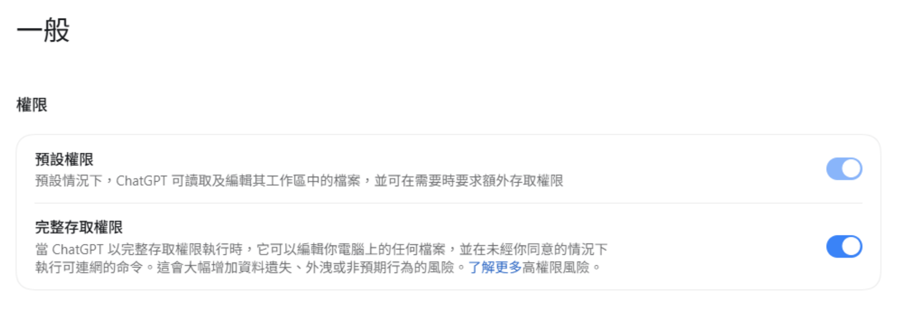
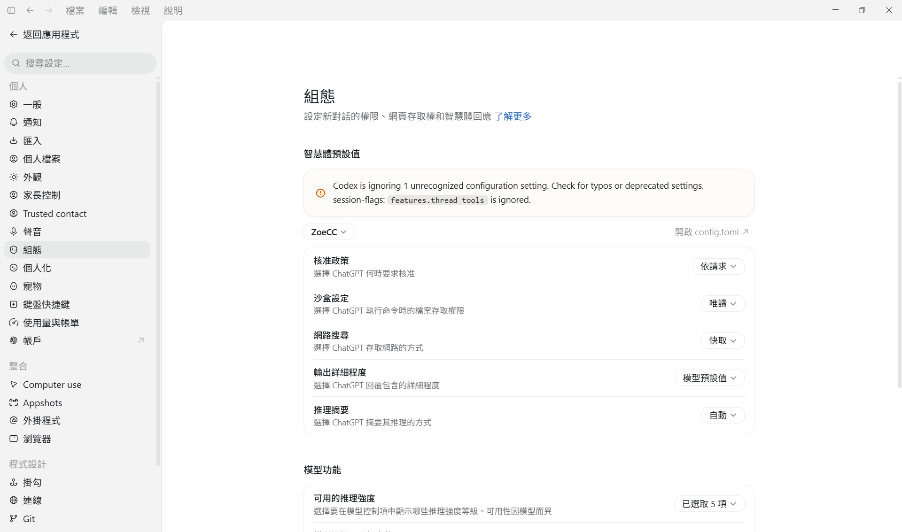
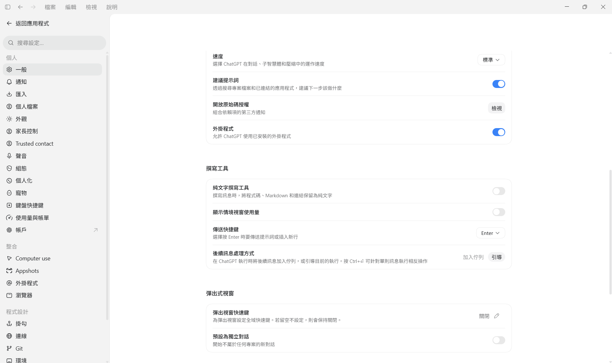
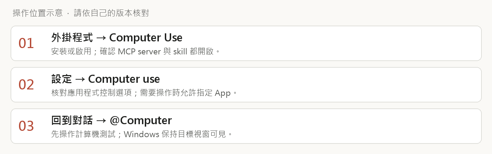

開啟 Codex 桌面介面
這份指引帶你在桌面 App 設定工作區、完整存取與 Computer use，接著用自己的論文製作研討會海報。

操作位置示意圖
第一次開啟
- 1. 由官方安裝說明開啟 Windows 下載入口，安裝後登入自己的 ChatGPT 帳號。
- 2. 在左上角產品選單選 Codex。不同版本可能使用 ChatGPT 桌面版名稱。
- 3. 點新增專案／開啟資料夾，選自己的「研討會海報」。Windows 也可試 Ctrl+O。
- 4. 在專案內開新對話，再由左下角個人選單開啟「設定」。
本課使用滑鼠設定及自然語言對話。安裝 npm、輸入 CLI bypass 指令與設定 PowerShell 都可略過。帳號功能依當天方案、地區與管理政策顯示。
照著這個順序走
第2頁準備雙雲端；第3–4頁完整存取；第5–6頁 Computer use；第7頁測試；第8頁海報；第9頁檢查與排錯。
準備原始區與工作區
兩個 Google 帳號各掛載一個雲端入口，就能分開保管原始資料與 AI 工作成果。

操作位置示意圖
- 1. 安裝 Google Drive 電腦版，登入帳號 A。
- 2. 系統匣 Drive 圖示 → 頭像 → 新增其他帳戶，登入帳號 B。
- 3. 在偏好設定／進階設定核對串流位置，各選不同且未占用的磁碟代號。
- 4. 帳號 B 建立「AI工作區」，把海報起步包解壓縮在其中。
- 5. 將這次論文、範本與圖表複製到00_來源。將課堂會用的檔案設為可離線使用。
研討會海報/ AGENTS.md 00_來源/ 01_草稿/ 02_海報/ 03_操作紀錄/ snapshots/
G、H 只是磁碟代號示例。Google Drive 的兩個雲端入口可獨立於 C、D 的實體硬碟分割設定。完成後用檔案總管各開一次，確認帳號與內容。
在 Codex 新增專案時，選「研討會海報」這層。讀取來源、寫入工作區的約定放在 AGENTS.md。這份文字約定與系統的檔案權限各自生效。
開啟完整存取選項
先到一般設定找到權限開關，再到組態核對新任務的預設。

講者提供的真實截圖；只呈現一般頁的權限區塊。
- 1. 左下角個人選單 → 設定 → 一般。
- 2. 找到「權限」區塊中的「完整存取權限」。
- 3. 閱讀畫面說明後，由本人開啟；若有確認視窗，核對範圍再確認。
- 4. 到下一頁的「組態」繼續設定。
這個模式可以做什麼
完整存取可讓代理程式讀寫 Windows 帳號能存取的檔案，並執行可連網的命令。搭配 Never 核准政策時，相關命令會省去逐次核准。請先準備練習副本，確認所在專案。
用當前任務狀態確認
一般頁開關、組態預設、當前對話的權限要逐一核對。返回應用程式後，查看輸入框旁的權限／盾牌圖示；圖示與文字依版本而異。變更預設後開新對話，再進行第7頁測試。
Computer use 的應用程式授權另外設定。完整存取仍可能遇到應用程式使用許可、Windows 權限或敏感動作確認。
在組態設定核准與沙盒
這張真實截圖顯示「依請求＋唯讀」。要教完整存取，就要進入這兩個下拉選單核對。

講者提供的真實截圖；畫面保留原狀，紅框由網頁標示設定位置。 點圖片可看完整畫面。
- 1. 設定左側 → 組態。
- 2. 頁面上方的範圍選單，選你自己的海報專案。截圖的 ZoeCC 是講者專案名稱。
- 3.「核准政策」選 Never 對應項，例如「永不」；以本版選單為準。
- 4.「沙盒設定」選 Full access／danger-full-access 對應的完整存取項目。
- 5. 返回應用程式，開一個新對話，查看目前任務的權限。
如果選單沒有這些選項、呈灰色，先查看帳號或機構管理限制。請勿把唯讀狀態當作設定成功。網路搜尋的「快取」只描述搜尋模式，另依查找需求設定。
若看到 features.thread_tools 未辨識設定警告，先更新 App，保留畫面並交給講者排查。權限是否完成設定，仍依上述核准與沙盒狀態核對。
啟用 Computer Use 外掛
先確認整體外掛功能開啟，再安裝並啟用 Computer Use。

講者提供的真實截圖；網頁重點標出「外掛程式」總開關。 點圖片可看完整畫面。
- 1. 設定 → 一般，往下找到「外掛程式」，確認開關開啟。
- 2. 返回應用程式，點左側「外掛程式」。
- 3. 搜尋 Computer Use，開啟對應外掛詳細頁。
- 4. 出現 Install plugin／安裝外掛時點安裝；出現 Enable／啟用時點啟用。
- 5. 確認 Computer Use 的 MCP server 與 skill 兩個開關都啟用。若有 Try now／立即試用，可由此開始。
上圖實拍的是一般設定中的外掛總開關。Computer Use 詳細頁的步驟依官方文件整理；同學看到的名稱、可用項目會依版本與帳號而異。
若搜尋不到外掛，先更新桌面 App、核對登入帳號與管理限制。保留可見錯誤交給講者處理。
設定 Computer use 的應用程式存取
外掛啟用後，讓 Codex 取得你要示範的應用程式使用許可。

操作位置示意圖
- 1. 設定左側 → 整合 → Computer use。
- 2. 查看「Control／控制」區域；若有 Any App／應用程式控制開關，依畫面開啟。
- 3. 回到海報專案對話，輸入 @ 並選 Computer，或直接說「請使用 Computer use」。
- 4. 第一次使用目標 App 時，核對許可視窗中的應用程式，再選 Allow／允許。
- 5. Always allow／一律允許會保存該 App 的許可；日後可到 Computer use 的允許清單移除。
Windows 示範方式
保持目標程式可見。操作期間把滑鼠鍵盤交給 Codex，觀察執行結果。需要中止時，使用對話中的停止控制項。先以計算機測試，再開 PowerPoint。
Chrome 額外連線
若課程要讓 Codex 操作已登入的 Chrome，從 Computer use 或瀏覽器設定中開啟 Chrome 的 Manage／管理，依畫面連接官方瀏覽器擴充功能。用 @Chrome 開始瀏覽器任務。內建瀏覽器、桌面 App 與 Chrome 連線分別核對。
本頁是官方流程示意。實際按鈕及可用功能以同學當天的 App 為準。
用兩個小任務確認設定
分別測試工作區寫檔與桌面操作，結果都要能親眼確認。
測試一 工作區寫入
請先告訴我這個任務的工作資料夾，以及工具能確認的沙盒與核准狀態；無法確認的項目請明說。接著只在這個專案的03_操作紀錄建立「設定測試.txt」，內容寫「工作區寫入成功」。完成後提供檔案連結。
點開檔案連結，確認檔案位置與文字。這項測試驗證工作區可寫；完整存取狀態仍依權限選單及可取得的任務設定核對。
測試二 Computer use
請使用 Computer use 開啟 Windows 計算機，用介面按鍵計算 23 × 17。操作前若需要應用程式許可，請讓我確認。完成後讀取畫面結果。
畫面出現 391，且能看到 Codex 實際操作計算機，才算完成桌面操作測試。只有文字回答391，尚未驗證 Computer use。
請同學打勾
- □ 專案資料夾正確。
- □ 權限選單與任務設定已核對。
- □ 設定測試.txt 存在且內容正確。
- □ Computer Use 外掛、server、skill 已啟用。
- □ 計算機有被實際操作，結果為391。
把論文做成研討會海報
把正式資料放進工作區，從盤點開始，再請 AI 協助排版與檢查。
任務一 盤點來源
請先讀AGENTS.md與00_來源，列出檔案用途、正式海報尺寸與方向、必填項目、正式作者名單及缺少的資料。存成01_草稿/01_海報需求.md，等我確認後再製作。
任務二 整理與製作
依已確認的論文與官方範本，整理研究問題、方法、結果、限制及書目。逐項標示來源頁碼，缺件寫待補。先做一張海報版面草稿供我看，再產出可編輯PPTX與PDF，存入02_海報。圖表數字以正式資料為準，書目採APA第七版，保留版本與修改比較。
任務三 用介面驗收
請使用 Computer use 開啟本專案02_海報的最新PPTX，檢查文字與圖表能否分別選取、是否有溢出或遮擋。再開同版PDF檢查尺寸、字型及圖表數字。把問題與尚待人工確認的項目存進03_操作紀錄。
多AI評閱可分配評審、口試委員與文獻審核角色，評論價值、優點、缺點及證據。作者逐條裁決採用、待查或保留。用Zotero核對作者、年份、題名、DOI和原文；查不到的引用標待查。
完成檢查與常見問題
離開課堂前，確認下次能從同一個資料夾接著工作。
- □ 新對話開在自己的研討會海報專案。
- □ 來源、草稿、成品、紀錄各自存放。
- □ PPTX可編輯，PDF可閱讀，引用與作者名單已核對。
- □ 每版另存並記修改原因；換機前等Google Drive同步完成。
卡住時看這裡
開了完整存取卻仍唯讀：核對組態適用的專案，再開新對話確認。能寫檔卻無法操作視窗：檢查 Computer Use 外掛、server、skill 與該 App 的允許狀態。Chrome未連線：到瀏覽器管理完成擴充功能連線。
同學沒有選項：核對桌面版更新、登入帳號、地區與機構政策。需要重新詢問時，附設定畫面與錯誤原文；請先遮掉帳號及私人檔案內容。
官方查核來源
OpenAI. (n.d.). Quickstart. https://learn.chatgpt.com/docs/quickstart
OpenAI. (n.d.). Computer Use. https://learn.chatgpt.com/docs/computer-use
OpenAI. (n.d.). Agent approvals & security. https://learn.chatgpt.com/docs/agent-approvals-security
Google. (n.d.). 自訂雲端硬碟電腦版設定. https://support.google.com/drive/answer/13470231?hl=zh-Hant
版本 v02，2026-09-22 查核。設定截圖來自講者提供的桌面 App。課堂網頁：https://echoofwren.github.io/codex-desktop-workshop/
TAKE IT WITH YOU
把教材帶回工作區
下載 ZIP 後按右鍵「全部解壓縮」。將內附研討會海報資料夾放進自己的 AI 工作區，再由 Codex 開啟該資料夾。